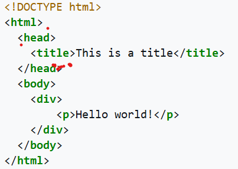
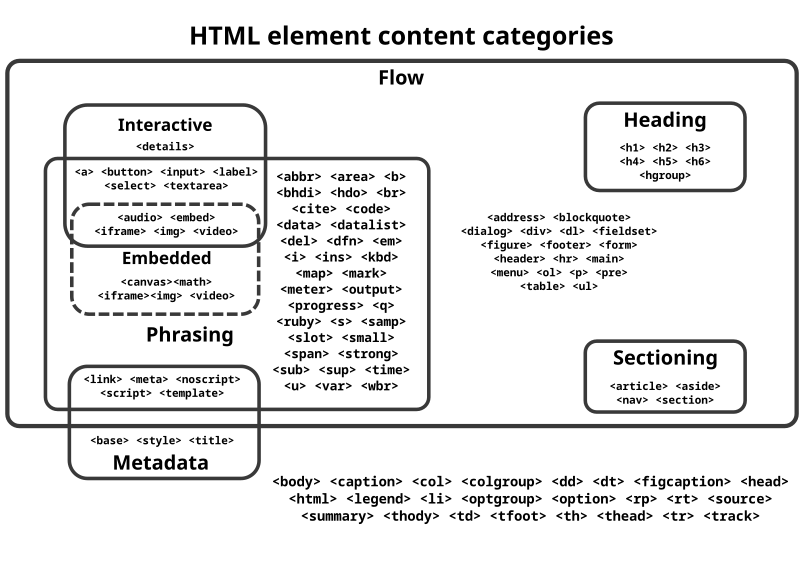
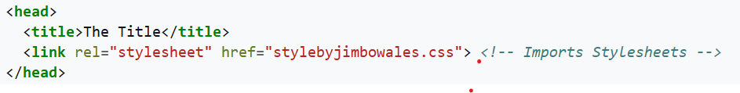
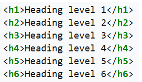
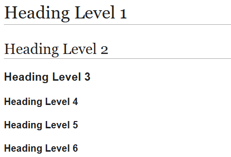

Hypertext Markup Language (HTML) is the standard markup language for documents designed to be displayed in a web browser. It defines the content and structure of web content. It is often assisted by technologies such as Cascading Style Sheets (CSS) and scripting languages such as JavaScript, a programming language.
Web browsers receive HTML documents from a web server or from local storage and render the documents into multimedia web pages. HTML describes the structure of a web page semantically and originally included cues for its appearance.
HTML elements are the building blocks of HTML pages. With HTML constructs, images and other objects such as
interactive forms may be embedded into the rendered page. HTML provides a means to create structured documents by
denoting structural semantics for text such as headings, paragraphs, lists, links, quotes, and other items. HTML
elements are delineated by tags, written using angle brackets. Tags such as <img> and
<input> directly introduce content into the page. Other tags such as <p> and
</p> surround and provide information about document text and may include sub-element tags.
Browsers do not display the HTML tags but use them to interpret the content of the page.
HTML can embed programs written in a scripting language such as JavaScript, which affects the behavior and content of web pages. The inclusion of CSS defines the look and layout of content. The World Wide Web Consortium (W3C), former maintainer of the HTML and current maintainer of the CSS standards, has encouraged the use of CSS over explicit presentational HTML since 1997. A form of HTML, known as HTML5, is used to display
video and audio, primarily using the <canvas> element, together with JavaScript.
In 1980, physicist Tim Berners-Lee, a contractor at CERN, proposed and prototyped ENQUIRE, a system for CERN researchers to use and share documents. In 1989, Berners-Lee wrote a memo proposing an Internet-based hypertext system. Berners-Lee specified HTML and wrote the browser and server software in late 1990. That year, Berners-Lee and CERN data systems engineer Robert Cailliau collaborated on a joint request for funding, but the project was not formally adopted by CERN. In his personal notes of 1990, Berners-Lee listed "some of the many areas in which hypertext is used"; an encyclopedia is the first entry.
The first publicly available description of HTML was a document called "HTML Tags", first mentioned on the Internet by Tim Berners-Lee in late 1991. It describes 18 elements comprising the initial, relatively simple design of HTML. Except for the hyperlink tag, these were strongly influenced by CERN SGML, an in-house Standard Generalized Markup Language (SGML)-based documentation format at CERN. Eleven of these elements still exist in HTML 4.
HTML is a markup language that web browsers use to interpret and compose text, images, and other material into visible or audible web pages. Default characteristics for every item of HTML markup are defined in the browser, and these characteristics can be altered or enhanced by the web page designer's additional use of CSS. Many of the text elements are mentioned in the 1988 ISO technical report TR 9537 Techniques for using SGML, which describes the features of early text formatting languages such as that used by the RUNOFF command developed in the early 1960s for the CTSS (Compatible Time-Sharing System) operating system. These formatting commands were derived from the commands used by typesetters to manually format documents. However, the SGML concept of generalized markup is based on elements (nested annotated ranges with attributes) rather than merely print effects, with separate structure and markup. HTML has been progressively moved in this direction with CSS.
Berners-Lee considered HTML to be an application of SGML. It was formally defined as such by the Internet Engineering Task Force (IETF) with the mid-1993 publication of the first proposal for an HTML specification, the "Hypertext Markup Language (HTML)" Internet Draft by Berners-Lee and Dan Connolly, which included an SGML Document type definition to define the syntax. The draft expired after six months, but was notable for its acknowledgment of the NCSA Mosaic browser's custom tag for embedding in-line images, reflecting the IETF's philosophy of basing standards on successful prototypes. Similarly, Dave Raggett's competing Internet Draft, "HTML+ (Hypertext Markup Format)", from late 1993, suggested standardizing already-implemented features like tables and fill-out forms.
After the HTML and HTML+ drafts expired in early 1994, the IETF created an HTML Working Group. In 1995, this working group completed "HTML 2.0", the first HTML specification intended to be treated as a standard against which future implementations should be based.
Further development under the auspices of the IETF was stalled by competing interests. Since 1996, the HTML specifications have been maintained, with input from commercial software vendors, by the World Wide Web Consortium (W3C). In 2000, HTML became an international standard (ISO/IEC 15445:2000). HTML 4.01 was published in late 1999, with further errata published through 2001. In 2004, development began on HTML5 in the Web Hypertext Application Technology Working Group (WHATWG), which became a joint deliverable with the W3C in 2008, and was completed and standardized on 28 October 2014.
November 24, 1995
HTML 2.0 was published as RFC 1866. Supplemental RFCs added capabilities:
January 14, 1997
HTML 3.2 was published as a W3C Recommendation. It was the first version developed and standardized exclusively by the W3C, as the IETF had closed its HTML Working Group on September 12, 1996.
Initially code-named "Wilbur", HTML 3.2 dropped math formulas entirely, reconciled overlap among various proprietary extensions and adopted most of Netscape's visual markup tags. Netscape's blink element and Microsoft's marquee element were omitted due to a mutual agreement between the two companies. A markup for mathematical formulas similar to that of HTML was standardized 14 months later in MathML.
December 18, 1997
HTML 4.0[19] was published as a W3C Recommendation. It offers three variations:
Initially code-named "Cougar", HTML 4.0 adopted many browser-specific element types and attributes, but also sought to phase out Netscape's visual markup features by marking them as deprecated in favor of style sheets. HTML 4 is an SGML application conforming to ISO 8879 – SGML.
April 24, 1998
HTML 4.0 was reissued with minor edits without incrementing the version number.
December 24, 1999
HTML 4.01 was published as a W3C Recommendation. It offers the same three variations as HTML 4.0 and its last errata were published on May 12, 2001.
May 2000
ISO/IEC 15445:2000 ("ISO HTML", based on HTML 4.01 Strict) was published as an ISO/IEC international standard. In the ISO, this standard is in the domain of the ISO/IEC JTC 1/SC 34 (ISO/IEC Joint Technical Committee 1, Subcommittee 34 – Document description and processing languages).
After HTML 4.01, there were no new versions of HTML for many years, as the development of the parallel, XML-based language XHTML occupied the W3C's HTML Working Group.
October 28, 2014
HTML5 was published as a W3C Recommendation.
November 1, 2016
HTML 5.1 was published as a W3C Recommendation.
December 14, 2017
HTML 5.2 was published as a W3C Recommendation.
October 1991
HTML Tags, an informal CERN document listing 18 HTML tags, was first mentioned in public.
June 1992
First informal draft of the HTML DTD, with seven subsequent revisions (July 15, August 6, August 18, November 17, November 19, November 20, November 22)
November 1992
HTML DTD 1.1 (the first with a version number, based on RCS revisions, which start with 1.1 rather than 1.0), an informal draft
June 1993
Hypertext Markup Language was published by the IETF IIIR Working Group as an Internet Draft (a rough proposal for a standard). It was replaced by a second version one month later.
November 1993
HTML+ was published by the IETF as an Internet Draft and was a competing proposal to the Hypertext Markup Language draft. It expired in July 1994.
November 1994
First draft (revision 00) of HTML 2.0 published by IETF itself (called as "HTML 2.0" from revision 02), that finally led to the publication of RFC 1866 in November 1995.
April 1995 (authored March 1995)
HTML 3.0 was proposed as a standard to the IETF, but the proposal expired five months later (28 September 1995) without further action. It included many of the capabilities that were in Raggett's HTML+ proposal, such as support for tables, text flow around figures, and the display of complex mathematical formulas. W3C began development of its own Arena browser as a test bed for HTML 3 and Cascading Style Sheets, but HTML 3.0 did not succeed for several reasons. The draft was considered very large at 150 pages and the pace of browser development, as well as the number of interested parties, had outstripped the resources of the IETF. Browser vendors, including Microsoft and Netscape at the time, chose to implement different subsets of HTML 3's draft features as well as to introduce their own extensions to it. (See browser wars.) These included extensions to control stylistic aspects of documents, contrary to the "belief [of the academic engineering community] that such things as text color, background texture, font size, and font face were definitely outside the scope of a language when their only intent was to specify how a document would be organized." Dave Raggett, who has been a W3C Fellow for many years, has commented for example: "To a certain extent, Microsoft built its business on the Web by extending HTML features." Official HTML5 logo Logo of HTML5
January 2008
HTML5 was published as a Working Draft by the W3C. Although its syntax closely resembles that of SGML, HTML5 has abandoned any attempt to be an SGML application and has explicitly defined its own "html" serialization, in addition to an alternative XML-based XHTML5 serialization.
2011 HTML5 – Last Call
On 14 February 2011, the W3C extended the charter of its HTML Working Group with clear milestones for HTML5. In May 2011, the working group advanced HTML5 to "Last Call", an invitation to communities inside and outside W3C to confirm the technical soundness of the specification. The W3C developed a comprehensive test suite to achieve broad interoperability for the full specification by 2014, which was the target date for recommendation. In January 2011, the WHATWG renamed its "HTML5" living standard to "HTML". The W3C nevertheless continued its project to release HTML5.
2012 HTML5 – Candidate Recommendation
In July 2012, WHATWG and W3C decided on a degree of separation. W3C will continue the HTML5 specification work, focusing on a single definitive standard, which is considered a "snapshot" by WHATWG. The WHATWG organization will continue its work with HTML5 as a "Living Standard". The concept of a living standard is that it is never complete and is always being updated and improved. New features can be added but functionality will not be removed. In December 2012, W3C designated HTML5 as a Candidate Recommendation. The criterion for advancement to W3C Recommendation is "two 100% complete and fully interoperable implementations".
2014 HTML5 – Proposed Recommendation and Recommendation
In September 2014, W3C moved HTML5 to Proposed Recommendation. On 28 October 2014, HTML5 was released as a stable W3C Recommendation, meaning the specification process is complete.
XHTML versions
XHTML is a separate language that began as a reformulation of HTML 4.01 using XML 1.0. It is now referred to as the XML syntax for HTML and is no longer being developed as a separate standard.
Transition of HTML publication to WHATWG
On 28 May 2019, the W3C announced that WHATWG would be the sole publisher of the HTML and DOM standards. The W3C and WHATWG had been publishing competing standards since 2012. While the W3C standard was identical to the WHATWG in 2007 the standards have since progressively diverged due to different design decisions. The WHATWG "Living Standard" had been the de facto web standard for some time.
HTML markup consists of several key components, including those called tags (and their attributes), character-based data types, character references and entity references. HTML tags most commonly come in pairs like <h1> and </h1>, although some represent empty elements and so are unpaired, for example <img>. The first tag in such a pair is the start tag, and the second is the end tag (they are also called opening tags and closing tags).
Another important component is the HTML document type declaration, which triggers standards mode rendering.
The following is an example of the classic "Hello, World!" program:
The text between <html> and </html> describes the web page, and the text between <body> and </body> is the visible page content. The markup text <title>This is a title</title> defines the browser page title shown on browser tabs and window titles and the tag <div> defines a division of the page used for easy styling. Between <head> and </head>, a <meta> element can be used to define webpage metadata.
The Document Type Declaration <!DOCTYPE html> is for HTML5. If a declaration is not included, various browsers will revert to "quirks mode" for rendering.
Elements
HTML documents imply a structure of nested HTML elements. These are indicated in the document by HTML tags, enclosed in angle brackets.
In the simple, general case, the extent of an element is indicated by a pair of tags: a "start tag" <p> and "end tag" </p>. The text content of the element, if any, is placed between these tags.
Tags may also enclose further tag markup between the start and end, including a mixture of tags and text. This indicates further (nested) elements, as children of the parent element.
The start tag may also include the element's attributes within the tag. These indicate other information, such as identifiers for sections within the document, identifiers used to bind style information to the presentation of the document, and for some tags such as the <img> used to embed images, the reference to the image resource in the format like this: <img src="example.com/example.jpg">
Some elements, such as the line break <br> do not permit any embedded content, either text or further tags. These require only a single empty tag (akin to a start tag) and do not use an end tag.
Many tags, particularly the closing end tag for the very commonly used paragraph element <p>, are optional. An HTML browser or other agent can infer the closure for the end of an element from the context and the structural rules defined by the HTML standard. These rules are complex and not widely understood by most HTML authors.
The general form of an HTML element is therefore: <tag attribute1="value1" attribute2="value2">''content''</tag>. Some HTML elements are defined as empty elements and take the form <tag attribute1="value1" attribute2="value2">. Empty elements may enclose no content, for instance, the <br> tag or the inline <img> tag. The name of an HTML element is the name used in the tags. The end tag's name is preceded by a slash character /. If a tag has no content, an end tag is not allowed. If attributes are not mentioned, default values are used in each case.
Element examples
Header of the HTML document: <head>...</head>. The title is included in the head, for example:
Headings
HTML headings are defined with the <h1> to <h6> tags with H1 being the highest (or most important) level and H6 the least:
The effects are:
